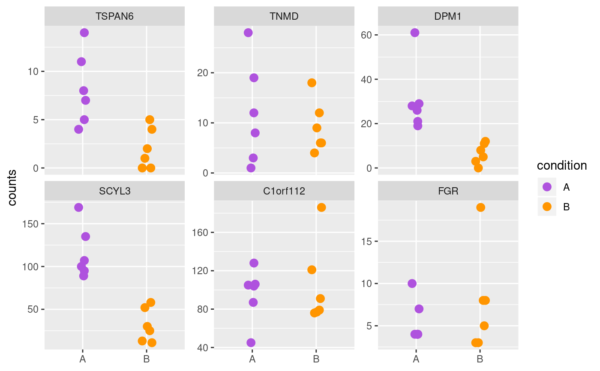
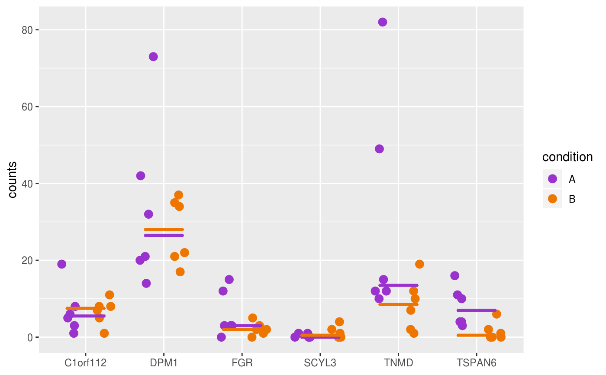

Plot counts
plotCounts(object, ...) # S4 method for SummarizedExperiment plotCounts( object, genes, assay = 1L, interestingGroups = NULL, trans = c("identity", "log2", "log10"), line = c("none", "median", "mean", "geometricMean"), color = getOption(x = "acid.color.discrete", default = acidplots::scale_color_synesthesia_d()), legend = getOption(x = "acid.legend", default = TRUE), style = c("facet", "wide"), labels = list(title = NULL, subtitle = NULL, sampleAxis = NULL, countAxis = "counts"), ... )
| object | Object. |
|---|---|
| genes |
|
| assay |
|
| interestingGroups |
|
| trans |
For more information: help(topic = "scale_x_continuous", package = "ggplot2") |
| line |
|
| color |
To set the discrete color palette globally, use: options(acid.color.discrete = ggplot2::scale_color_viridis_d()) |
| legend |
|
| style |
|
| labels |
|
| ... | Additional arguments. |
style = "facet": ggplot grouped by sampleName, with
ggplot2::facet_wrap() applied to panel the samples.
style = "wide": ggplot in wide format, with genes on the x-axis.
Updated 2019-12-09.
data(RangedSummarizedExperiment, package = "acidtest") ## SummarizedExperiment ==== object <- RangedSummarizedExperiment rownames <- head(rownames(object)) print(rownames)#> [1] "gene001" "gene002" "gene003" "gene004" "gene005" "gene006"#> [1] "ENSG00000000003" "ENSG00000000005" "ENSG00000000419" "ENSG00000000457" #> [5] "ENSG00000000460" "ENSG00000000938"#> [1] "TSPAN6" "TNMD" "DPM1" "SCYL3" "C1orf112" "FGR"## Rownames, gene IDs, and gene names (symbols) are supported. plotCounts(object, genes = geneIDs, style = "facet")plotCounts(object, genes = geneNames, style = "wide")